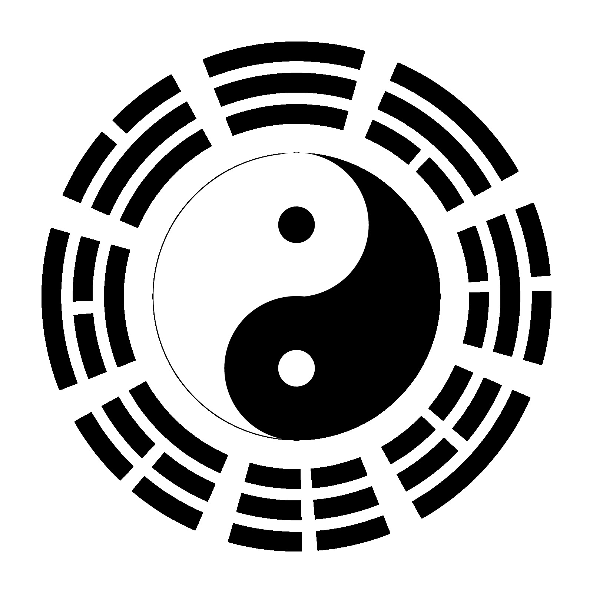

易有太极，是生两仪。两仪生四象，四象生八卦。
library(circlize)
factors = 1:8
circos.par(start.degree = 22.5, gap.degree = 6)
circos.initialize(factors = factors, xlim = c(0, 1))
# yang yao is __ (a long segment)
add_yang_yao = function() {
circos.rect(0,0,1,1, col = "black")
}
# yin yao is -- (two short segments)
add_yin_yao = function() {
circos.rect(0,0,0.45,1, col = "black")
circos.rect(0.55,0,1,1, col = "black")
}
circos.track(ylim = c(0, 1), factors = factors, bg.border = NA,
panel.fun = function(x, y) {
i = get.cell.meta.data("sector.numeric.index")
if(i %in% c(2, 5, 7, 8)) add_yang_yao() else add_yin_yao()
}, track.height = 0.1)
circos.track(ylim = c(0, 1), factors = factors, bg.border = NA,
panel.fun = function(x, y) {
i = get.cell.meta.data("sector.numeric.index")
if(i %in% c(1, 6, 7, 8)) add_yang_yao() else add_yin_yao()
}, track.height = 0.1)
circos.track(ylim = c(0, 1), factors = factors, bg.border = NA,
panel.fun = function(x, y) {
i = get.cell.meta.data("sector.numeric.index")
if(i %in% c(4, 5, 6, 7)) add_yang_yao() else add_yin_yao()
}, track.height = 0.1)
# the bottom of the most recent track
r = get.cell.meta.data("cell.bottom.radius") - 0.1
# draw taiji, note default order is clock wise for `draw.sector`
draw.sector(center = c(0, 0), start.degree = 90, end.degree = -90,
rou1 = r, col = "black", border = "black")
draw.sector(center = c(0, 0), start.degree = 270, end.degree = 90,
rou1 = r, col = "white", border = "black")
draw.sector(center = c(0, r/2), start.degree = 0, end.degree = 360,
rou1 = r/2, col = "white", border = "white")
draw.sector(center = c(0, -r/2), start.degree = 0, end.degree = 360,
rou1 = r/2, col = "black", border = "black")
draw.sector(center = c(0, r/2), start.degree = 0, end.degree = 360,
rou1 = r/8, col = "black", border = "black")
draw.sector(center = c(0, -r/2), start.degree = 0, end.degree = 360,
rou1 = r/8, col = "white", border = "white")
circos.clear()